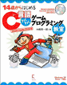

ＤＸライブラリとは、DirectXを使ったWindowsソフトの開発に必ず付いて回るDirectXやWindows関連のプログラムを使い易くまとめた形で利用できるようにしたＣ＋＋言語用のゲームライブラリです。(使用する際はＣ言語の知識だけで大丈夫です)
これによってプログラマーはゲームの本質的なプログラムに専念することが出来ます。かなり本格的なソフト制作からお遊び程度のミニゲーム制作まで幅広くカバーしています！
プログラムソースも公開していますので気兼ねなく使用してください。
14歳からはじめる C言語わくわくゲームプログラミング教室
Visual Studio 2010編(左) と
14歳からはじめる C++わくわくゲームプログラミング教室(右)
著者はどちらも 大槻 有一郎様


ゲームプログラムの入門書です
Ｃ言語版は、初めてＣ言語に触れる方や、これからゲームプログラムを始める方、
ＤＸライブラリの使い方が分からない方におすすめです。
(解説されているゲームはアクションゲーム)
Ｃ＋＋版は、Ｃ言語を知っている方向けの続編で、Ｃ＋＋言語に触れてみたい方におすすめです。(解説されているゲームはSTGとリアルタイムSLG)
ＤＸライブラリ更新履歴
ＤＸライブラリＨＰ更新履歴
ＤＸライブラリの仕様と特徴
どこまでできるＤＸライブラリ
ＤＸライブラリのダウンロード
ＤＸライブラリの使い方
ＤＸライブラリの関数リファレンスマニュアル
＆
サンプルプログラム
ＤＸライブラリミニテクニック
ＤＸライブラリサンプルプログラム
ＤＸライブラリゲームプログラム開発講座
ＤＸライブラリサンプルゲームのダウンロード
『皆様の作品紹介！』投稿＆閲覧ページ
ＤＸライブラリを使用していただいた「作品の紹介」を投稿したり
( 作品ファイル自体は投稿できない )
投稿していただいた作品(の、紹介)を閲覧したりというページです。
<一番新しい作品のスクリーンショット>

掲示板
雑談＆質問掲示板(日付順表示)
雑談風書き込みに適した掲示板です。
ＤＸライブラリプログラム＆プログラム質問掲示板(スレッド表示)
スレッド表示の質問・回答に適した掲示板です。
リンク
管理人のメールアドレス